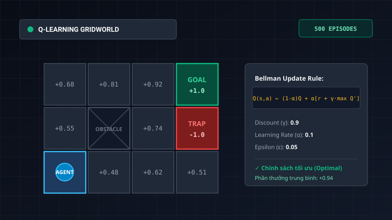

03. Tác Tử Học Tăng Cường (Reinforcement Learning) Trong GridWorld
1. Bài Toán Đặt Ra (Problem Formulation)
Môi trường GridWorld bao gồm một lưới các ô trạng thái với vị trí xuất phát, các ô chướng ngại vật dạng tường, các ô hố bẫy mang phần thưởng âm (r = -1.0) và ô đích mang phần thưởng dương cao nhất (r = +1.0). Tác tử không hề biết trước xác suất chuyển trạng thái của môi trường (xác suất trượt 20% sang hai bên khi thực hiện hành động).
Mục tiêu là xây dựng tác tử có khả năng tự động học được chính sách hành động tối ưu π*(s) thông qua quá trình tương tác thử-và-sai (Trial and Error) để tối đa hóa hàm giá trị kỳ vọng chiết khấu theo thời gian.
2. Phương Pháp Tiếp Cận & Thuật Toán
Đồ án triển khai và so sánh hai trường hợp tiếp cận theo lý thuyết Quá trình Quyết định Markov (MDP):
- Quy hoạch động (Value Iteration): Áp dụng phương trình Bellman khi tác tử có đầy đủ mô hình môi trường T(s, a, s') và hàm phần thưởng R(s, a, s'). Thuật toán lặp đến khi hàm giá trị hội tụ với ngưỡng sai số ε ≤ 0.001.
- Học không cần mô hình (Q-Learning): Tác tử cập nhật bảng Q-table dựa trên công thức cập nhật sai số chênh lệch thời gian (Temporal Difference - TD error):
Q(s, a) ← (1 - α) • Q(s, a) + α • [ R(s, a, s') + γ • maxa' Q(s', a') ]
- Cân bằng Khám phá & Khai thác (Exploration vs. Exploitation): Sử dụng chiến lược ε-Greedy với giá trị ε suy giảm dần theo thời gian (Epsilon Decay từ 1.0 xuống 0.05).

3. Kết Quả Thực Nghiệm & Đánh Giá
Thông qua việc chạy thử nghiệm với các tham số học khác nhau:
- Tốc độ hội tụ: Thuật toán Q-Learning hội tụ về chính sách tối ưu sau khoảng 350 – 450 chu kỳ (episodes) với hệ số học α = 0.1 và hệ số chiết khấu γ = 0.9.
- Khả năng ứng phó tính ngẫu nhiên: Tác tử tự động học được chiến lược "né xa bờ vực bẫy âm" khi xác suất nhiễu gió trượt cao, ưu tiên đi vòng an toàn thay vì đi sát mép vực.
- Hiệu suất tích lũy: Điểm số trung bình trên mỗi lượt chơi tăng từ -0.62 ở 50 chu kỳ đầu lên +0.94 khi đã hội tụ.
4. Tài Nguyên & Liên Kết Liên Quan
Mã nguồn mô phỏng GridWorld và báo cáo thuật toán có thể được truy xuất qua các đường dẫn: